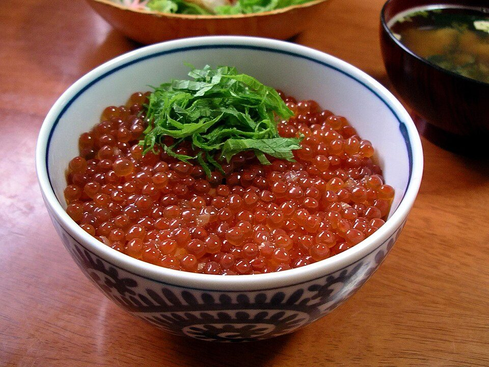
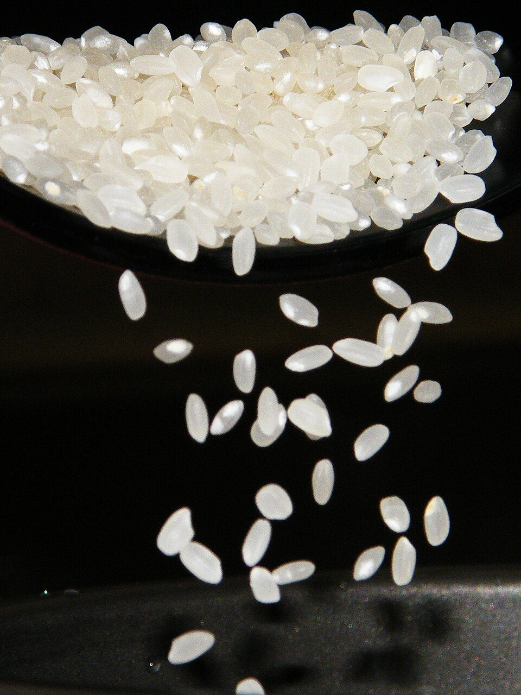
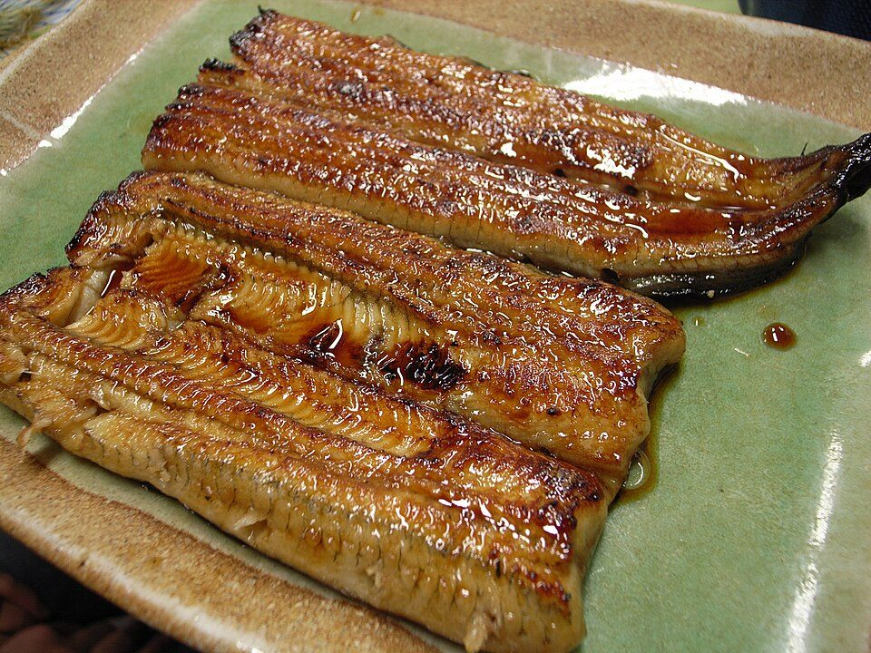
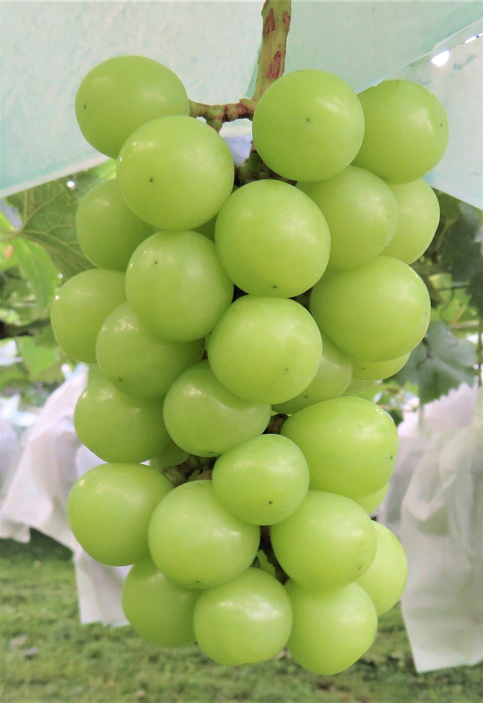
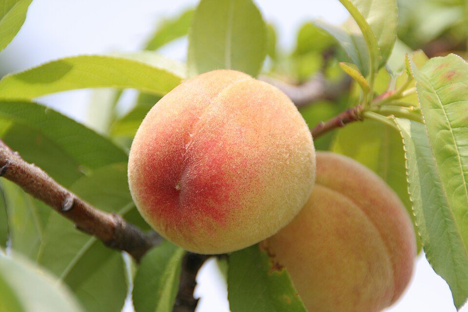
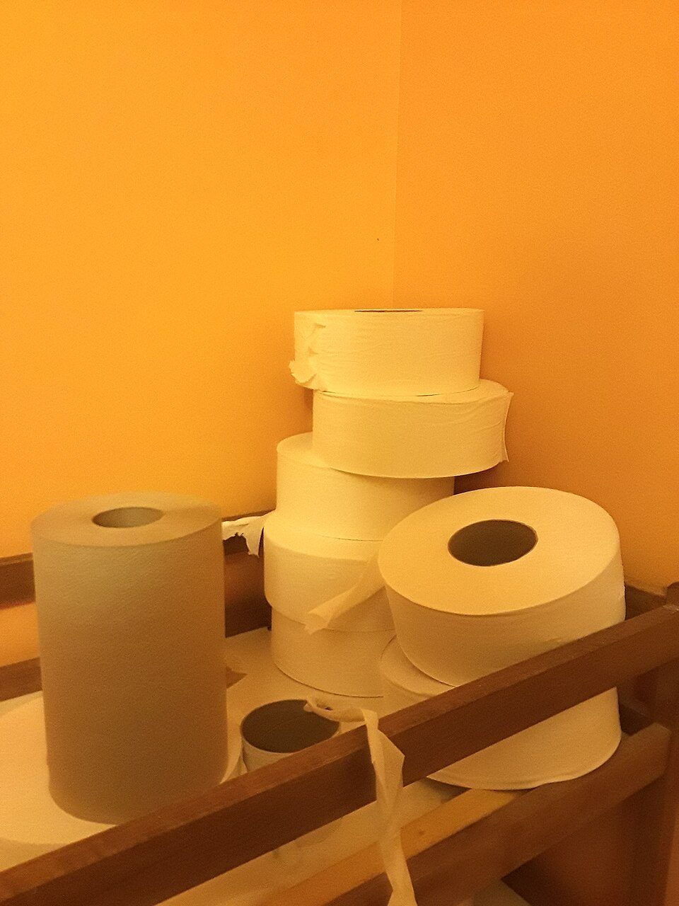

ふるさと納税のおすすめ返礼品：人気の分類と、届く時期・保存・量で選ぶ（2026年版）
要点まとめ
ふるさと納税の返礼品は数が多く、どれを選べばよいか迷います。この記事では、どの返礼品がよく選ばれているかを、経済産業研究所の調査、ポータルサイト各社が公表したランキング、総務省の現況調査で確かめ、そのうえで「保存場所・届く時期・量・産地」という選ぶ軸と、分類ごとの代表的な返礼品を紹介します。返礼品の寄附額などは2026年11月24日にふるさとチョイスのページで確かめた値で、特定の自治体・返礼品・ポータルサイトをすすめるものではありません。写真はイメージで、紹介する返礼品そのものではありません。控除の仕組みや上限の目安、ワンストップ特例はふるさと納税の2026年版にまとめています。

よく選ばれている返礼品
品目では「米」と「牛肉」が上位
分類では魚介・海産物、肉、米、果物の順（民間調査）[1]
経済産業研究所（RIETI）とインテージリサーチの共同調査（Web調査、2026年1月28〜30日）は、2025年に寄附した20〜64歳の有職者で、個人の年収が300万円以上の10,850人が対象です[1]。分類別では「魚介・海産物」39.7%、「肉」36.8%、「米」28.7%、「果物」23.6%の順で、品目別では「米」27.6%、「牛肉」25.4%が上位、トイレットペーパーが3位でした[1]。
ポータル各社が公表した、2025年の人気
1位は、牛タン・米・ほたて・ハンバーグと各社で違う
さとふるは、2025年の寄附申込み数で岩手県宮古市の「厚切り塩だれ牛タン」が1位になり、6年連続で首位だった「ホタテ」を抜いたと公表しています[8]。ふるさとチョイスは「米」が2年連続で人気カテゴリの首位になったと説明しています[9]。楽天ふるさと納税は、北海道別海町の「北海道産ほたて貝柱」が2025年の年間ランキングで1位だったと紹介しています[10]。Amazonふるさと納税の2025年（1〜11月の集計）の1位は、佐賀県唐津市の黒毛和牛ハンバーグだったと報じられました[11]。
| 順位 | 返礼品（要約） | 自治体 | 寄附額 |
|---|---|---|---|
| 1 | 厚切り塩だれ牛タン 1.4kg | 岩手県宮古市 | 11,500円 |
| 2 | 特上ハンバーグ 10個 | 佐賀県唐津市 | 13,000円 |
| 3 | シャインマスカット 2房（約1kg、先行受付） | 山梨県山梨市 | 13,000円 |
| 4 | ホタテ玉冷 1kg（訳あり） | 北海道紋別市 | 22,000円 |
| 5 | ボックスティッシュ 60箱 | 栃木県小山市 | 14,000円 |
| 6 | 鮭 切身 約2kg（訳あり） | 宮城県気仙沼市 | 12,500円 |
| 7 | トイレットペーパー 96ロール | 静岡県富士市 | 13,000円 |
| 8 | うなぎ蒲焼 4尾（計520g） | 宮崎県宮崎市 | 17,000円 |
| 9 | 蟹ズワイしゃぶ 約1kg | 北海道弟子屈町 | 17,000円 |
| 10 | 明太子切子 1kg（訳あり） | 福岡県大野城市 | 11,000円 |
さとふるのランキングのページは「順位に一部誤りがあったため、2026年2月12日に修正」と表示しています。2026年9月24日の保存版で見た修正後のページでも、上位10位の自治体と品の種類の並びは上の表と同じでした[12]。
ランキングは横に並べて比べられない
さとふるは寄附の申込み数（1〜12月）[8]、Amazonは1〜11月の集計[11]、経済産業研究所の調査は回答者に占める割合[1]で、数え方がそれぞれ違います。この記事では順位を比べず、「各社がこう公表している」として紹介しています。
2026年 紙製品がさらに上位に
さとふるの上半期は、日用品が初めて1位・2位に[13]
さとふるの2026年上半期（1〜5月の寄附件数）は、静岡県富士市のトイレットペーパーが1位、栃木県小山市のボックスティッシュが2位で、日用品が1位・2位を占めたのは初めてと公表しています[13]。経済産業研究所の調査でも、寄附先として多く挙がった自治体のうち、富士市・富士宮市・小山市では日用品が1位でした[7]。
寄附額は変わる
同じ返礼品でも、寄附額は時期によって変わります。さとふるのランキングに載った唐津市のハンバーグ10個は、2026年1月20日時点の13,000円[8]が、2026年9月24日の保存版では14,000円、紋別市のホタテ1kgは22,000円が18,000円でした[12]。千葉県大網白里市の米10kgは、在庫調整のため2026年3〜4月に寄附額を20,000円から16,000円程度に下げたと説明されています[13]。この記事の寄附額は、それぞれ書いた日時点の値です。
寄附が多く集まった自治体
2025年度の1位は大阪府泉佐野市の約230億円[14]
総務省の現況調査（2026年7月31日公表）による、2025年度（2025年4月〜2026年3月）の受入額です[14]。現況調査には、どの返礼品が多かったかは書かれていません。経済産業研究所の調査では、回答者が最も多く寄附した自治体ごとに見ると、宮崎県都城市では上位3位までを肉が占め、北海道の沿岸部の自治体では海産物が1位でした[7]。
選ぶ順番：保存場所・届く時期・量・産地
返礼品のページには、寄附額のほかに「発送期日」「配送（冷凍便など）」「容量」「消費期限・賞味期限」「原料原産地」などが書かれています。筆者の提案として、次の順に確かめると選びやすくなります。
1. 冷凍庫・冷蔵庫に入るか
今回の例では、肉・魚介は冷凍便、果物は冷蔵便
この記事で紹介するふるさとチョイスの返礼品では、肉・魚介はすべて冷凍便、果物は冷蔵便、米と紙製品は常温便でした（各品のページ）。冷凍品は、家庭の冷凍庫では表示の賞味期限より短い期間を勧める品があります。宮城県塩竈市のいくらは、表示の賞味期限は業務用冷凍庫（-18℃以下）での保存が条件で、家庭用冷凍庫での保管は「出荷日より1ヶ月」を勧めています[5]。北海道紋別市のホタテ1kgも、家庭用の冷蔵庫では到着後1か月以内に食べるよう勧めています[15]。
2. いつ届くか
果物は来年の旬、肉でも数か月後に届く品がある
果物は先行受付が多く、今申し込むと2027年の旬に届きます[2][20]。肉でも、岩手県花巻市の牛タンは「2027年2月以降」の発送で[3]、三重県松阪市の松阪牛は「お届けまで4か月以上かかる場合」があるとしています[21]。11月24日に申し込んだ場合の目安は、第5章のタイムラインにまとめました。
3. 量と小分け
「500g×2パック」「80g×1〜10個」などの書き方を見る
同じ牛タン1kgでも、花巻市の品は「500g×２パック」です[3]。唐津市のハンバーグは「150ｇ×12個」[22]、標津町のいくらは80gを1〜10個から選べます[17]。一方、塩竈市のいくらは「200g(200g×1P)」の1パックです[5]。冷凍庫の空きと、1回に食べる量を考えて選ぶのがよいと筆者は考えます。
4. 原料の産地と加工地
地元で加工した品でも、原料は外国産のことがある
花巻市の牛タンの原料は「アイルランド産又はウルグアイ産又はその他」で、ページに「※国産ではありません」と書かれています[3]。根室市のカニは、原産地が「ロシア産又はアメリカ産(5％未満)又は北海道産(5％未満)又はカナダ産(5％未満)」、加工地が根室市です[16]。気になる人は「原料原産地」「加工地」の欄を確かめましょう。
米・肉・魚介の代表的な返礼品
ここからは、分類ごとに代表的な返礼品を2〜3品ずつ紹介します。ランキングの上位と同じ自治体・同じ種類の品を中心に、ふるさとチョイスで届く時期や保存方法の書き方が違う品を選びました（筆者の選定）。寄附額・内容量・届く時期は、2026年11月24日にふるさとチョイスで確認した値です。

米：ななつぼし 精米10kg
発送月を「12月発送」〜「8月発送」から選べる[19]
- 自治体
- 北海道沼田町
- 寄附額
- 17,000円（2026年11月24日にふるさとチョイスで確認）[19]
- 内容量
- 10kg（5kg×2袋）×1回[19]
- 届く時期
- 選んだ発送月に発送。10月・11月発送は受付終了[19]
- 保存
- 常温便。保存期限の目安は冬2か月、春・秋は1か月以内、夏はさらに短い[19]
米：ゆめぴりか 5kgの6回定期便
毎月5kgずつ、計6回届く[25]
- 自治体
- 北海道美唄市
- 寄附額
- 62,000円（2026年11月24日にふるさとチョイスで確認）[25]
- 内容量
- 令和8年産 ゆめぴりか 5kg×計6回[25]
- 届く時期
- 申込みの翌月中旬〜下旬に初回出荷、2回目以降は約1か月ごと[25]
- 保存
- 常温便。賞味期限は精米日より1か月[25]
肉：松阪牛 霜降り 切り落とし 1kg
配送月を指定できる。年内配送には入金期限がある[21]
- 自治体
- 三重県松阪市
- 寄附額
- 30,000円（2026年11月24日にふるさとチョイスで確認）[21]
- 内容量
- 切り落とし 1kg[21]
- 届く時期
- 配送月を指定できる。「お届けまで4か月以上かかる場合」があるとしている[21]
- 保存
- 冷凍便。賞味期限は発送日より1か月[21]
2027年2月以降に発送 肉：厚切り牛タン塩味 1kg
500g×2パック。原料は外国産[3]
- 自治体
- 岩手県花巻市
- 寄附額
- 15,000円（2026年11月24日にふるさとチョイスで確認）[3]
- 内容量
- 1kg（500g×2パック）[3]
- 届く時期
- 2027年2月以降に発送[3]
- 保存
- 冷凍便。賞味期限は製造日より364日[3]
肉：ハンバーグ 12個（1.8kg）
150gずつの12個。入金から1か月以内に発送[22]
- 自治体
- 佐賀県唐津市
- 寄附額
- 16,000円（2026年11月24日にふるさとチョイスで確認）[22]
- 内容量
- 150g×12個（1.8kg）[22]
- 届く時期
- 入金確認より1か月以内に発送[22]
- 保存
- 冷凍便。消費期限は60日[22]
魚介：ホタテ貝柱 600g（訳あり）
決済から12営業日以内に発送。年内は12月14日まで[4]
- 自治体
- 北海道紋別市
- 寄附額
- 12,000円（2026年11月24日にふるさとチョイスで確認）[4]
- 内容量
- 生食用の貝柱 600g（約30〜100粒）[4]
- 届く時期
- 決済確認から12営業日以内（お盆・年末年始を除く）。年内配送は12月14日(月)の決済完了分まで（オンライン決済に限る）[4]
- 保存
- 冷凍便。賞味期限は-18℃以下で製造日より2年[4]
魚介：いくら醤油漬け 80g（個数を選べる）
80gの小分けを1〜10個から選べる[17]
- 自治体
- 北海道標津町
- 寄附額
- 80g×1個で15,000円、80g×2個で25,000円（2026年11月24日にふるさとチョイスで確認）[17]
- 内容量
- 80g×1〜10個（計80〜800g）[17]
- 届く時期
- 入金確認後、2週間程度で発送[17]
- 保存
- 冷凍便。賞味期限は製造から2年間[17]

魚介：九州産うなぎ蒲焼 3尾
160g以上を3尾。入金から1〜2か月以内に発送[27]
- 自治体
- 宮崎県宮崎市
- 寄附額
- 15,000円（2026年11月24日にふるさとチョイスで確認）[27]
- 内容量
- うなぎ蒲焼 計480g以上（3尾）、たれ・さんしょう各3袋[27]
- 届く時期
- 入金確認後、1〜2か月以内に発送予定（日にちの指定はできない）[27]
- 保存
- 冷凍便。出荷日より1か月以上先の賞味期限の品を届ける[27]
果物・日用品・宿泊・体験の代表的な返礼品
今回調べた果物は、どれも翌年の旬に届く「先行受付」でした。ふるさとチョイスも、ぶどうはシャインマスカットの先行予約を中心に注目を集めていると説明しています[9]。寄附額などは、2026年11月24日にふるさとチョイスで確認した値です。

2027年に発送 果物：シャインマスカット 1.2kg
2027年8月17日〜10月15日に発送する先行受付[2]
- 自治体
- 山梨県山梨市
- 寄附額
- 13,000円（2026年11月24日にふるさとチョイスで確認）[2]
- 内容量
- 1.2kg（2〜3房）[2]
- 届く時期
- 2027年8月17日〜10月15日。申込期日は2027年9月30日まで[2]
- 保存
- 冷蔵便。賞味期限は出荷日+5日[2]

2027年に発送 果物：桃詰合せ 約2kg
2027年6月下旬〜8月中旬に順次発送[28]
- 自治体
- 山梨県都留市
- 寄附額
- 11,000円（2026年11月24日にふるさとチョイスで確認）[28]
- 内容量
- 約2kg（5〜8玉）[28]
- 届く時期
- 2027年6月下旬〜8月中旬。申込期日は2027年7月15日まで[28]
- 保存
- 冷蔵便。届いたら箱から出し、冷暗所で保管する[28]
2027年に発送 果物：さくらんぼ「佐藤錦」500g
2027年6月中旬〜6月末ごろに出荷。日にちは選べない[20]
- 自治体
- 山形県東根市
- 寄附額
- 500gで13,000円（2026年11月24日にふるさとチョイスで確認）[20]
- 内容量
- 500g（500g×1パック）。1kg（500g×2パック）も選べる[20]
- 届く時期
- 2027年6月中旬〜6月末ごろに順次出荷予定[20]
- 保存
- 冷蔵便。賞味期限は発送日より2日程度[20]

日用品：トイレットペーパー 96ロール
常温で置けるが、年末の申込みは届くまで時間がかかることがある[29]
- 自治体
- 静岡県富士市
- 寄附額
- 18,500円（2026年11月24日にふるさとチョイスで確認）[29]
- 内容量
- 96ロール（12ロール×8パック）、ダブル、107mm×40m[29]
- 届く時期
- 入金確認後から90日程度で発送。11〜12月の申込みは、通常の発送期日にさらに90営業日かかる可能性がある[29]
- 保存
- 常温便[29]
くわしく
- 96ロールは、置き場所の広さも先に確かめておきたい（筆者の見解）
日用品：ボックスティッシュ 60箱
2026年12月から順次発送[30]
- 自治体
- 栃木県小山市
- 寄附額
- 14,000円（2026年11月24日にふるさとチョイスで確認）[30]
- 内容量
- 5個入り×12セット（1個150組・300枚）[30]
- 届く時期
- 2026年12月より順次発送[30]
- 保存
- 常温便。消費期限はないが、においの強い物の近くに置くとにおいが移ることがある[30]
宿泊・体験型を「今後選びたい」人は2割ほど
選んだことがある5.3%、今後選びたい21.6%（民間調査）[31]
さとふるの2026年のアンケート（2026年4月16〜27日、インターネット調査、さとふるを使ったことがない人・ふるさと納税をしたことがない人を含む8,588人）の結果です[31]。ふるさとチョイスは2025年の振り返りで、「旅行」カテゴリの寄付件数が約1.2倍、「イベント・チケット等」は寄付額・寄付件数とも約1.4倍に増えたと説明しています（前年同期比。比べた期間は書かれていない）[9]。宿泊の返礼品には決まりがあり、第6章で紹介します。
宿泊：宿泊補助券 9,000円分（和倉温泉の旅館）
有効期限は発行から5年間。事前の予約が必要[32]
- 自治体
- 石川県七尾市
- 寄附額
- 36,000円（2026年11月24日にふるさとチョイスで確認）[32]
- 内容
- 宿泊補助券 9,000円分。券に書かれた七尾市内の宿に1泊以上するとき、宿泊代に使える[32]
- 届く時期
- 決済から2週間程度で発送[32]
- 有効期限
- 発行から5年間[32]
宿泊：リゾートホテルの宿泊ギフト券 15,000円分
有効期間は発行日より1年。届くまで1か月〜1か月半[33]
- 自治体
- 山口県下関市
- 寄附額
- 15,000円分で56,000円（2026年11月24日にふるさとチョイスで確認）[33]
- 内容
- リゾナーレ下関の宿泊ギフト券。15,000円分と30,000円分がある[33]
- 届く時期
- 注文から1か月〜1か月半。2026年11月26日までの入金分は12月25日(金)に発送[33]
- 有効期限
- 発行日より1年。発行日は注文から約30〜40日後の日付[33]
体験：十勝川のラフティング（半日、1名分）
寄附を申し込む前に、電話での予約が必要[34]
- 自治体
- 北海道新得町
- 寄附額
- 15,000円（2026年11月24日にふるさとチョイスで確認）[34]
- 内容
- ラフティングツアー 1名分。半日（約2〜2.5時間）のコース[34]
- 届き方
- チケットは届かない。当日の受付で寄附の決済完了メールを見せる[34]
- 有効期限
- 予約日より1年間。利用期間は4月末ごろ〜11月3日ごろ[34]
体験：陶芸の電動ろくろ（1名分）
チケットの有効期限は発行から6か月[35]
- 自治体
- 静岡県藤枝市
- 寄附額
- 15,000円（2026年11月24日にふるさとチョイスで確認）[35]
- 内容
- 電動ろくろの陶芸体験チケット 1名分。中学生以上が対象[35]
- 届く時期
- 入金確認後、2週間から1か月でチケットを発送予定[35]
- 有効期限
- 発行から6か月[35]
今申し込むと、いつ届く？
2026年11月24日に申し込み、その日に決済した場合の届く時期の目安です。カレンダーの時期は、各ページの「発送期日」から筆者が数えた目安で、ページの書き方は下の小さい文字のとおりです。
- 12月上旬ごろ
すぐ発送する冷凍のいくら・ホタテ
塩竈市のいくらは決済から7日程度[5]、標津町のいくらは入金確認後2週間程度[17]、紋別市のホタテ600gは決済確認から12営業日以内[4]
- 12月14日(月)
年内配送の締め切りの例
紋別市のホタテは、この日の決済完了分まで（オンライン決済に限る）[4]。松阪市の松阪牛の、銀行振込などの入金期限[21]
- 12月21日(月)
松阪牛の年内配送の入金期限（カードなど）
クレジットカードなどの即日決済の場合[21]
- 12月中
ティッシュ・ハンバーグ・宿泊ギフト券
小山市のティッシュは2026年12月より順次[30]、唐津市のハンバーグは入金確認より1か月以内[22]、下関市の宿泊ギフト券は11月26日までの入金分を12月25日(金)に発送[33]
- 12月27日〜1月3日
年末年始は発送を止める自治体も
神奈川県葉山町の例（定期便・日時指定品・季節商品・年内発送案内品は除く）[36]
- 12月下旬〜2027年春
うなぎ・鮭・トイレットペーパー
宮崎市のうなぎは1〜2か月以内[27]、気仙沼市の鮭は1〜3か月程度（集中すると、さらに1〜2か月）[18]、富士市のトイレットペーパーは90日程度（11〜12月の申込みはさらに遅れることがある）[29]
- 2027年2月以降
牛タン（花巻市）
- 2027年6月中旬〜末
さくらんぼ（東根市）
- 2027年6月下旬〜8月中旬
桃（都留市）
- 2027年8月17日〜10月15日
シャインマスカット（山梨市）
年末は遅れやすい
栃木県佐野市は、年末は申込みが集中し、返礼品の発送が予定より大幅に遅れる場合があると案内しています[37]。山梨県は、12月31日はアクセスが集中して申込みや決済ができない場合があるとしています[38]。年内の寄附の締め切りやワンストップ特例の期限は、ふるさと納税の2026年版を見てください。
返礼品のルールと税金
返礼品は寄附額の3割以下
返礼品ごとの基準。物価が上がっても例外にならない[39]
返礼品の調達にかかる費用は寄附額の3割以下で、返礼品ごとに満たす必要があります[39]。総務省は、物価上昇で調達費が変わっても例外にならないとし、自治体に返礼品の数量の調整や必要な寄附額の変更などで対応するよう求めています[39]。全国の合計では、2025年度の返礼品の調達費は受入額の26.5%でした[14]。
返礼品にかかわる主な決まりの変更は、次のとおりです。
- 2023年10月
熟成肉と精米は、同じ都道府県産の原材料に限る
- 2024年10月
宿泊と、企画だけを地元で行う製品の基準を見直し
- 2025年10月1日
ポイントを付けるポータルなどを通じた募集を禁止
- 2026年10月
加工品の「価値の過半」の証明と公表
証明の内容を、一般に販売するときの価格とあわせて自治体が公表する[24]
返礼品は「一時所得」
受け取った年の一時所得。合計50万円以下なら課税なし[6]
国税庁は、返礼品を受けた経済的利益は一時所得に当たるとしています[42]。寄附した年ではなく、返礼品を受け取った年の分になります（前年11月に寄附し、本年2月に受け取った例）[6]。一時所得の特別控除は最高50万円なので、その年のほかの一時所得も含めた総収入金額の合計が50万円を超えなければ、課税関係は生じません[6]。
くわしく
- 年末に寄附して返礼品が翌年に届くと、翌年分の一時所得になる（国税庁の例と同じ形）[6]
- 返礼品の価値をいくらと数えるかは国税庁のページに書かれていないため、計算例は載せない
気をつけること
偽サイトに注意
大幅な値引きや、振込先が個人名のサイトは疑う
静岡県は、正規のサイトの画像や文面を流用した偽サイトでは、税の控除が受けられない・返礼品が届かないだけでなく、氏名・住所・カード情報を不正に取られるおそれがあるとしています[43]。福岡県も、口座振込の振込先が市町村と関係のない個人名や会社名になっている例に注意を呼びかけています[44]。
「コスパ」「物価高応援」は基準違反のおそれ
割安と思わせる表現は、総務省が自治体に注意している[45]
総務省は2026年8月20日の通知で、一部のポータルサイトに「コスパ」「特別寄附額」「特別規格」「家計応援」「物価高応援」など、寄附額が割安だと思わせる表現があり、基準に違反するおそれが高いとしました[45]。寄附額を将来上げると予告して募集することも同じだとしています[45]。こうした言葉だけで選ばず、内容量や届く時期で比べるのがよいと筆者は考えます。
2026年10月 ふるさとチョイスへの不正アクセス
会員の個人情報4,454,097件が流出したと運営会社が公表[46]
運営会社のトラストバンクは、2026年10月17日に不正アクセスがあり、会員の氏名・メールアドレス・住所・電話番号・ハッシュ化されたパスワード・寄附控除試算額が流出したと公表しています[46]。Web版は11月6日12時から順次寄附の受付を再開し、全会員のパスワードを無効にして再設定を求めています[47]。アプリ版は11月9日15時から再開しました[48]。
くわしく
- 同社や関係先を装った不審なメール・SMS・電話・郵便物に注意するよう呼びかけている[47]
届かない・遅れることもある
米の返礼品が予定どおり届かなかった例がある
新潟県は2025年5月、在庫がないのに委託業者のシステム設定の誤りで受付を続けた事案（151人）と、米の定期便の申込みが想定を超えて全量を確保できなかった事案（633人）を公表しました[49]。岐阜県垂井町も、前年12月に米の返礼品の申込みが殺到し、在庫管理が行き届かず発送が遅れたと公表しています[50]。
今回確認できなかった点
- さとふるの返礼品ページは開けず、2026年11月24日時点の寄附額・発送時期は確認できなかった
- ふるなび・au PAY ふるさと納税の2025年の年間ランキング、楽天の年間ランキングの表、Amazonの公式の発表
- 東根市のさくらんぼ1kgと、下関市の宿泊ギフト券30,000円分の寄附額
- 一時所得を計算するときに、返礼品の価値をいくらと数えるかの公式の説明
- 返礼品が届かない・品質が悪いといった相談の、全国の件数
- ふるさとチョイスの件の、11月9日より後の続報
関連する記事
- ふるさと納税の2026年版（控除の仕組み・上限の目安・ワンストップ特例・締め切り）
- 社会人お得技ノート② 税金・控除
- 社会人お得技ノート⑥ 通信・サブスク・クレカ・ポイント
出典（52件）
閲覧日はいずれも2026年11月24日
- 速報：2025年ふるさと納税 ― 返礼品の選択構造と制度改正の影響、利用継続意向（2026年3月11日）（独立行政法人 経済産業研究所（RIETI））
- 【2027年発送先行受付】シャインマスカット秀 1.2kg(2～3房)（ふるさとチョイス（山梨県山梨市））
- 厚切り牛タン塩味 1kg（500g×2パック）（ふるさとチョイス（岩手県花巻市））
- 【年内配送】【訳あり】北海道オホーツク産ホタテ貝柱(生食用)小粒大入 600g（ふるさとチョイス（北海道紋別市））
- 竈いくら いくら醤油漬け 200g（ふるさとチョイス（宮城県塩竈市））
- 質疑応答事例「ふるさと納税の返礼品の収入計上時期」（国税庁）
- ふるさと納税で人は何を基準に自治体を選ぶのか―理念と返礼品からみる寄附先選択―（2026年7月22日）（独立行政法人 経済産業研究所（RIETI））
- さとふる、2025年ふるさと納税人気お礼品ランキング（確定版）を発表！（2026年1月23日）（株式会社さとふる（PR TIMES））
- 2025年 人気ランキング&トレンド振り返り（株式会社トラストバンク（ふるさとチョイス））
- ふるさと納税賞の受賞自治体を発表！ショップ・オブ・ザ・イヤー2025（楽天グループ株式会社（楽天ふるさと納税））
- 【大晦日まで12日】Amazonふるさと納税、2025年間ランキング出る（2025年12月19日）（トラベル Watch（株式会社インプレス））
- 【2025年総合】ふるさと納税人気お礼品ランキング（株式会社さとふる）
- さとふる、2026年上半期ふるさと納税人気お礼品ランキングを発表！トイレットペーパー・ティッシュが初の1位・2位独占（2026年6月17日）（株式会社さとふる（PR TIMES））
- ふるさと納税に関する現況調査結果（令和8年度実施、2026年7月31日、PDF）（総務省）
- 【年内配送】北海道オホーツク海産ホタテ玉冷バラエティサイズ(1kg)（ふるさとチョイス（北海道紋別市））
- 【生食可】カット済み生ずわいがに1.4～1.6kg(700～800g×2P)（ふるさとチョイス（北海道根室市））
- いくら 醤油漬け 80g 選べる 1~10個（ふるさとチョイス（北海道標津町））
- 宮城県産 熟成 銀鮭 切身 約2kg（ふるさとチョイス（宮城県気仙沼市））
- ななつぼし 精米 10kg（5kg×2袋）発送月が選べる（ふるさとチョイス（北海道沼田町））
- 【2027年産】GI東根さくらんぼ「佐藤錦」秀品 Lサイズ（ふるさとチョイス（山形県東根市））
- 【年内発送】松阪牛 霜降り 切り落とし 1kg（ふるさとチョイス（三重県松阪市））
- 昭和20年創業老舗の極みハンバーグ12個(1.8kg)（ふるさとチョイス（佐賀県唐津市））
- 報道資料「ふるさと納税の次期指定に向けた見直し」（2023年6月27日）（総務省）
- ふるさと納税の指定基準の改正等について（2025年6月24日、PDF）（総務省）
- 【6回定期便】令和8年産 ゆめぴりか 5kg（ふるさとチョイス（北海道美唄市））
- 米 5kg 定期便 6回 新潟県産コシヒカリ（ふるさとチョイス（新潟県胎内市））
- 九州産うなぎ蒲焼3尾 計480g以上（ふるさとチョイス（宮崎県宮崎市））
- 【2027年発送】山梨県都留市産 桃詰合せ 約2.0kg (5～8玉)（ふるさとチョイス（山梨県都留市））
- トイレットペーパー ダブル プレミアムシンラ 96ロール（ふるさとチョイス（静岡県富士市））
- おやまくま春夏秋冬ボックスティッシュ 60箱（ふるさとチョイス（栃木県小山市））
- 2026年 ふるさと納税利用実態アンケート結果発表（株式会社さとふる）
- 宿泊補助券 日本の宿 のと楽 9,000円分（ふるさとチョイス（石川県七尾市））
- 星野リゾート リゾナーレ下関 宿泊ギフト券（ふるさとチョイス（山口県下関市））
- 北海道 十勝川 ラフティング ツアー（ふるさとチョイス（北海道新得町））
- 陶芸体験 電動ろくろ チケット 1名様分（ふるさとチョイス（静岡県藤枝市））
- ふるさと納税 年末年始のご案内（2026年11月19日更新）（神奈川県葉山町）
- 寄附金受領証明書、ワンストップ特例申請書、返礼品の発送について（2026年11月12日更新）（栃木県佐野市）
- 年末年始の取扱いについて（2026年2月3日更新）（山梨県）
- ふるさと納税制度の適正な運用について（2026年9月25日 総税市第108号、PDF）（総務省）
- 平成31年総務省告示第179号（令和8年3月31日最終改正、PDF）（総務省）
- 報道資料「ふるさと納税の指定基準の見直し等」（2024年6月28日）（総務省）
- 質疑応答事例「「ふるさと納税」を支出した者が地方公共団体から謝礼を受けた場合の課税関係」（国税庁）
- ふるさと納税の寄附をかたる「悪質な詐欺サイト（偽サイト）」にご注意ください！（2026年4月30日更新）（静岡県）
- ふるさと納税の偽サイトにご注意ください！！（2026年4月8日更新）（福岡県）
- ふるさと納税制度における募集適正基準の遵守の徹底について（2026年8月20日 総税市第96号、PDF）（総務省）
- 不正アクセスによる寄附者様情報の外部流出に関するお詫びとお知らせ（第1報、2026年10月20日）（株式会社トラストバンク）
- 不正アクセスによる寄附者様情報の外部流出に関するお詫びとお知らせ（第5報、2026年11月5日）（株式会社トラストバンク）
- 不正アクセスによる寄附者様情報の外部流出に関するお詫びとお知らせ（第6報、2026年11月9日）（株式会社トラストバンク）
- ふるさと納税返礼品（米）の発送ができない事案が発生しました（2025年5月9日更新）（新潟県）
- ふるさと納税返礼品（米）発送遅延について（2025年2月20日更新）（岐阜県垂井町）
- 返礼品に関するQ＆A（2024年1月5日更新）（長野県富士見町）
- 【返礼品について】返礼品に不備があった（2024年6月19日更新）（福井市）
写真・画像の出典（6件）
- いくら丼（いくらの醤油漬けをご飯にのせたもの）
写真: Blue Lotus／Wikimedia Commons（CC BY 2.0） - 精米したコシヒカリ
写真: Emran Kassim／Wikimedia Commons（CC BY 2.0） - うなぎの蒲焼
写真: Kossy@FINEDAYS／Wikimedia Commons（CC BY 2.0） - ぶどう棚に実ったシャインマスカット
写真: 黒崎一男／Wikimedia Commons（CC BY-SA 4.0） - 枝に実った桃（山梨県）
写真: skyseeker／Wikimedia Commons（CC BY 2.0） - 積み重ねたトイレットペーパーなどの紙のロール
写真: Ser Amantio di Nicolao／Wikimedia Commons（CC BY-SA 4.0）